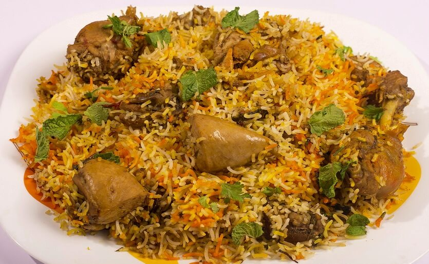

____
Традиционная еда
Machbūs | Макбус — Рецепт блюда пришел в Бахрейн из Саудовской Аравии. Почти весь арабский мир называет его «кабса», а в странах Персидского залива оно известно как «макбус». Эта еда похожа на плов: длинный рис, крупные куски мяса, смесь ароматных специй. В Бахрейне блюдо предпочитают готовить с курицей или рыбой.

Chicken Tikka | Чикен Тикка — Для жарки куриного шашлыка тикка повар готовит два маринада: имбирный с лаймом и свекольный с йогуртом. Они вступают в реакцию и придают мясу красный цвет, глянцевую поверхность и фантастическую сочность. Блюдо получается ароматным, пряным, острым.
Maqluba | Маклюбе — Блюдо пользуется в Бахрейне успехом. Чтобы приготовить его правильно, повара предварительно отваривают рис и крупные куски баранины или курицы, жарят картофель, томаты, морковь и лук. Все это сгружают в казан слоями. Овощи пускают сок и пропитывают крупу, а затем мясо.
Harees | Хариса — Густая сытная каша из разваренной пшеницы с курицей. Мясо размягчается до такой степени, что само распадается на волокна и превращается в пастообразную массу. У блюда нежная консистенция, а кусочек сливочного масла делает текстуру еще мягче.
Muhammar | Мухаммар — Из традиционных гарниров в Бахрейне стоит попробовать сладкий рис. Блюдо получается фантастически ароматным, потому что его щедро посыпают восточными пряностями. Коричневый или белый рис пропаривают, а затем варят на пару и добавляют розовую воду. Готовую массу смешивают с сахарным сиропом и финиковой пастой.
Balaleet | Балалит — Сладко-соленое блюдо balaleet в Бахрейне принято есть на завтрак. Удивительный контраст текстур, вкусов и ароматов в одной тарелке. По сути это классический омлет с пряной вермишелью. Макароны слегка поджаривают в сахаре с кардамоном, шафраном и розовой водой. Затем выкладывают горкой или заворачивают в яичный блин.

Sambusa | Самбуса — Бахрейн позаимствовал это блюдо у индусов и передал под себя. Самбуса – ходовой стрит-фуд, который нравится туристам и местным жителям. Аппетитные пухлые пирожки в виде трубочек или треугольников. Они покрыты золотой корочкой, потому что жарятся во фритюре. Внутри скрывается сочная начинка из фарша, картофеля, фасоли, овощей или фруктового пюре.

Zulbia | Зулбия — На десерт в Бахрейне попробуйте арабские хрустящие пончики. В Египте их называют «залябия», в Индии ту же выпечку готовят без пряностей и именуют «джалеби». По консистенции персидская зулбия похожа на советское печенье «хворост».

Gahwa | Гахва — вечнозеленое дерево, чьи плоды растут прямо на стволе. Из них делают соки, мармелад, желе и даже вино.
____